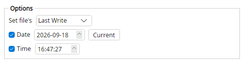

Magic File Renamer Help
Date/Time Setter

Filter options (screenshot optional — capture to images/DateTimeSetter.png).
Sets the calendar date and/or time-of-day for creation, last write, or last access time. Unchecked parts keep the existing values.
Options
- Timestamp field — Creation, last write, or last access.
- Set date / Set time — Which parts to replace.
- Date / Time values — The new calendar date and/or time of day.
Examples
(last write 2020-01-01 10:00) >>> (last write 2026-09-11 10:00)
(creation time kept when Set time unchecked) >>> (date changed, time unchanged)